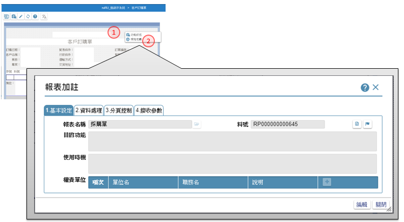

如如-智慧軟體機器人
如如-智慧軟體機器人
IDE操作手冊 14.報表的處理規格
作業目的：在完成報表的版面設計，宣告了報表上的資料欄位，接下來就是對各個輸出的資料欄位定義其資料處理規格，以滿足報表的需求。

- 在表單版面空白處，點選滑鼠右鍵
- 在選單中，選擇「規格定義」 ，即可開啟【報表加註】
14.1 基本設定
作業目的：報表的基本資料。
參考資料：℗文件

- 基本設定：駐留本頁籤進行報表的基本設定
- 編輯鍵：點選本鍵，進入編輯狀態
- 報表名稱：顯示報表的名稱，可利用開窗鍵, 開啟【多語詞庫】指定挑選詞庫, 請參考［16.2］來變更內容
- 料號：顯示報表的料號
- 目的功能：顯示已輸入的規格內容
- 使用時機：輸入本報表的使用時機
- 權責單位：
- 規格描述：開啟【規格描述】進行規格說明。操作方式請參考［6.1.1］
- 開完工鍵：點選本按鍵決定是否完工，影響【專案統計】內容
- 儲存鍵：把內容儲存到資料庫
14.2 資料處理
作業目的：說明報表主要的資料來源及排序的方式、是否登冊使用記錄等。
參考資料：

- 資料處理：駐留本頁籤進行報表資料來源上的設定
- 編輯鍵：點選本鍵，進入編輯狀態
- 來源類別：指定報表資料的來源表格類別，下拉：資料表/檢視表
- 載入來源：依查表來源，開窗挑選指定表格名稱
- 參數鍵：依該檢視表是否有定義接收參數，而點選本鍵開啟【傳遞參數】，操作說明請參考［附錄A3］
- 過濾鍵：可利用本鍵, 開啟【條件式】中, 指定表格來源記錄的符合條件內容，操作說明請參考［附錄A1］
- 清除鍵：利用本鍵清除原指定的條件式
- 來源排序：指定來源表格記錄要求的排序方式出現在報表資料列
- 排序欄位：開窗挑選指定的來源表格的欄位清單
- 排序方式：下拉挑選升冪(由小到大排)/降冪(由大到小排列)
- 排序增加鍵：增加排序的項目
- 排序刪除鍵：刪除排序的項目
- 排序上移鍵：往上移動資料列的順序
- 排序下移鍵：往下移動資料列的順序
- 輸出LOG：勾選本項，表示在報表列印或輸出時，會記錄輸出者的相關記錄
- 記錄鍵值：輸入可辨視報表差異的鍵值，挑選接收的參數
- 檔案加密：勾選本項，表示在報表輸出成excel 及PDF檔時，會進行加密動作
- 加密鍵值：指定輸出excel 及PDF檔時, 要加密的鍵值，挑選接收的參數
- 儲存鍵：把內容儲存到資料庫
14.3 階層分頁
作業目的：本作業針對報表階層、分頁上的需求進行指定。
參考資料：℗文件

- 分頁控制：駐留本頁籤進行報表分頁上的設定
- 編輯鍵：點選本鍵，進入編輯狀態
- 階層別：本清單顯示版面上區分的報表階層
- 資料欄位：本清單顯示歸屬在報表階層別下的元件內容
- 駐留資料欄位：駐留要列入分群的欄位項目
- 向右加入鍵：將階層群組及搭配的報表元件，加入右側群組依據中
- 向左移除鍵：駐留已設定的群組依據，按下後則移除該群組依據
- 分群項目鍵：階層名稱＋報表元件名稱，若有多筆可設定排序
- 向上鍵：把駐留的分群項目往上移動排序
- 向下鍵：把駐留的分群項目往下移動排序
- 分頁模式：選擇報表分頁的基礎
依版面空間：即版面已滿時才會換頁
依資料行數：限定頁身指定行數
依階層別：挑選依據階層，依上述設定階層群組依據異動而分頁 - 資料行數：分頁模式＝依資料行數，在本欄位輸入指定行數
- 依階層別：分頁模式＝依階層別，下拉挑選階層別
- 換頁重印：指報表換頁時，頁首內容是否於次頁中顯示
- 頁尾位置：指定頁尾的資訊出現的位置，
固定版面底部，即將頁尾內容固定置於報表最下方
跟隨資料列，即將頁尾資料內容，置於頁身或階尾內容的下方顯示 - 儲存：把內容儲存到資料庫
14.4 接收參數
作業目的：當報表接受外部的條件指定時，可利用參數方式接收資訊，做為後續處理的依據。
參考資料：℗文件

- 接收參數：駐留在本頁籤下，設定參數的內容
- 編輯鍵：點選本鍵，進入編修模式
- 新增鍵：點選 + 新增鍵新增檢視表的初始記錄。
- 參數名：輸入本筆資料欄位要預設的內容值。
- 型態：下拉挑選, 型態:文字/數字/日期
- 說明：輸入參數用途
- 新增參數項目鍵：新增參數資料列
- 儲存鍵：點選本鍵，把異動後的資料存回資料庫